slot0-smgw v022 und slot1-smgwweb v009, freiwillig slot2-smgwkosten v006 · Seiten smgw.html v060, freiwillig smgw_kosten.html v038 · Firmware ab 11.11.2026 für die Zertifikatsanzeige · Ohne persönliche Daten: alle Zugangsdaten, Kennungen und Adressen aus dem eigenen Netz sind Platzhalter oder ausgeblendetslot0-smgw v021/v022, neuer Firmware-Befehl TinyCTlsGueltig, Abschnitt 9.5).slot2-smgwkosten_v006.tc bewahrt Börsenpreise sieben Jahre auf.smgw_kosten.html v030: Tarifvergleich mit Schalter „Vorjahr“ (Zeile mit dem ganzen Vorjahr über dem eigenen Tarif), Zeitraum als Überschrift, Ersparnis durch §14a je Zeile; Herkunft der Daten in der Kopfzeile des PDF; Seitenwahl SMGW-Leser grün, Stromkosten orange; Sprünge über 25 kWh je Viertelstunde gelten als Lücke.slot2-smgwkosten_v005.tc: Börsenpreise werden drei Kalenderjahre aufbewahrt (laufendes Jahr, Vorjahr, Vorvorjahr).slot2-smgwkosten und Seite smgw_kosten.html. Rechnet aus den amtlichen Viertelstunden Tag, Monat und Abrechnungsjahr mit den eigenen Preisen, holt dafür die Börsenpreise und vergleicht Tarife. Wer das nicht braucht, lädt Slot 2 und die Seite einfach nicht – der SMGW-Leser läuft ohne vollständig.smgw.html v057: Die Seitenwahl „SMGW-Leser | Stromkosten“ erscheint nur, wenn Slot 2 geladen ist.smgw_kosten.html v020 – Knopf „Als PDF drucken“ in Monatsrechnung, Abrechnungsjahr und Tarifvergleich (je eine A4-Seite); Diagramm „Alle Monate“ jetzt im Abrechnungsjahr, die Monatsrechnung zeigt die Tage des Monats (Abschnitt 11.4).slot1-smgwweb v009: Bei der Erstinbetriebnahme lehnte die Seite die Identifikationsnummer ab („braucht Slot 1 v006“), weil Slot 1 bei noch leerem Zugang kein Feld id meldete. Behoben.slot0-smgw v016: Lässt das Gateway eine Verbindung still fallen, wiederholt der Leser jetzt auch die Anmeldung einmal mit neuer Verbindung (vorher nur den Tagesabruf). Ursache belegt mit der Diagnosezeile aus v015 (Abschnitt 10).slot0-smgw v017: Diese Wiederholung gibt es nur, wenn mit den aktuellen Zugangsdaten seit dem Start schon einmal eine Anmeldung gelungen ist. Ein falsches Passwort kostet so nie einen zweiten Versuch, auch bei einem Gateway, das darauf mit Verbindungsabbruch statt 401 antwortet (Hinweis Gerhard).slot0-smgw v018/v019: Startmeldung im Log in zwei Zeilen (vorher bei 127 Zeichen abgeschnitten), keine Kürzungsmeldung mehr beim Einlesen der Einstellungen.slot0-smgw v020: Die Wiederholung der Anmeldung setzt sich auch zurück, wenn Gateway-Adresse, Port, Pfad, Client-Zertifikat oder Identifikationsnummer geändert werden (Hinweis Gerhard).Ein Smart-Meter-Gateway (SMGW) speichert die amtlichen 15-Minuten-Zählerstände des Zählers: Bezug (OBIS 1-0:1.8.0) und Einspeisung (1-0:2.8.0). Über die HAN-Schnittstelle kann der Anschlussnutzer sie im Browser abrufen. Der SMGW-Leser macht das automatisch:
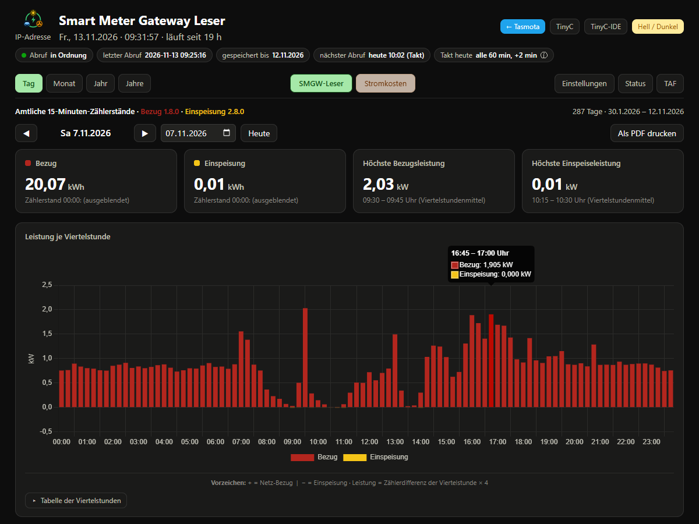
/smgw, Reiter „Tag“: Tageswerte und Leistung je Viertelstunde (Bezug rot nach oben, Einspeisung gelb nach unten). Adresse des Lesers und Zählerstände für das Bild ausgeblendet.Getestet sind zwei Boards von Waveshare. Beide haben LAN (zur HAN-Buchse), WLAN (ins Heimnetz) und einen Steckplatz für die SD-Karte. Der Leser braucht wenig: gemessen rund 0,3 MB PSRAM und gut 30 KB für das Skript; die Tagesseite des Gateways (rund 170 KB) wird in 1-KB-Stücken ausgewertet. Empfehlung: das ESP32-S3-ETH, der P4 ist für diese Aufgabe überdimensioniert.
| Teil | Angabe |
|---|---|
| Board | Waveshare ESP32-S3-ETH (SKU 28972); mit PoE-Modul als Satz ESP32-S3-POE-ETH (SKU 28771) Kaufen: https://www.waveshare.com/esp32-s3-eth.htm Wiki: https://www.waveshare.com/wiki/ESP32-S3-ETH |
| Prozessor | ESP32-S3R8 (Revision v0.2), 240 MHz |
| Speicher | 8 MB PSRAM, 16 MB Flash (am Gerät gelesen mit Status 4) |
| WLAN | im ESP32-S3 eingebaut (2,4 GHz), kein Zusatzchip, kein Update nötig |
| Ethernet | W5500 über SPI (EthType 8): RST GPIO 9, INT GPIO 10, MOSI GPIO 11, MISO GPIO 12, SCLK GPIO 13, CS GPIO 14 |
| SD-Karte | SPI: CS GPIO 4, MISO GPIO 5, MOSI GPIO 6, SCLK GPIO 7 (FAT32) |
| Strom | USB-C oder PoE (nur mit PoE-Modul). Am HAN-Anschluss: Strom über USB-C, normales Patchkabel direkt zum Gateway. |
| Gemessen 09.11.2026 | Erstabruf 283 Tage in 39 min; danach frei: Arbeitsspeicher 218 KB, größter Block 164 KB, PSRAM 7,7 von 8 MB |
| Teil | Angabe |
|---|---|
| Board | Waveshare ESP32-P4-WIFI6-POE-ETH (SKU 32832) Kaufen: https://www.waveshare.com/esp32-p4-wifi6-poe-eth.htm?sku=32832 Wiki: https://www.waveshare.com/wiki/ESP32-P4-WIFI6-POE-ETH |
| Prozessor | ESP32-P4 (Revision v1.3), betrieben mit 360 MHz |
| Speicher | 32 MB PSRAM, 32 MB Flash (am Gerät gelesen mit Status 4) |
| WLAN | ESP32-C6 als Funkchip (ESP-Hosted über SDIO, GPIO 14–19, Reset GPIO 54). Firmware des C6 mindestens 2.12.6, siehe Abschnitt 4.4 |
| Ethernet | PHY IP101 (EthType 1), MDC GPIO 31, MDIO GPIO 52, Reset GPIO 51, Takt GPIO 50; Versorgung auch über PoE möglich |
| SD-Karte | SDIO 4-Bit: D0–D3 = GPIO 39–42, CLK = GPIO 43, CMD = GPIO 44 (FAT32) |
| Strom | USB-C oder PoE. Wichtig: Kommt der Strom nur über PoE, ist das Board ohne LAN-Kabel aus. |
| Schaltplan | files.waveshare.com/wiki/ESP32-P4-WIFI6-POE-ETH/ESP32-P4-WIFI6-POE-ETH-Schematic.pdf |
Der SMGW-Leser hängt an zwei Netzen gleichzeitig:
| Anschluss | Netz | Zweck |
|---|---|---|
| LAN | direkt (oder über einen eigenen Switch) an der HAN-Buchse des Gateways, feste Adresse im Netz der HAN-Schnittstelle, ohne Gateway und DNS | nur der Abruf beim SMGW |
| WLAN | Heimnetz (Adresse per DHCP, am besten im Router fest zuweisen) | Bedienung, Seite, Uhrzeit (NTP), FTP-Sicherung, Excel |
Vorgabe (PPC): HAN-Schnittstelle des Gateways https://192.168.1.200:443/cgi-bin/hanservice.cgi, SMGW-Leser im LAN fest 192.168.1.21 / 255.255.255.0. Welche Adresse das eigene Gateway an der HAN-Buchse hat, steht in den Unterlagen des Messstellenbetreibers.
Ändern ohne neue Firmware: Reiter Einstellungen → Gateway (HAN-Schnittstelle). „Adresse des Gateways“ als ganze Adresse mit Port und Pfad eintragen (fehlen sie, gelten 443 und /cgi-bin/hanservice.cgi); „Leser im LAN“ ist eine freie Adresse im selben Netz. Ändert sich die LAN-Adresse, startet der Leser einmal neu; über das WLAN bleibt er erreichbar. In der Konsole geht dasselbe mit SMGWHost, SMGWPort, SMGWPfad bzw. EthIPAddress.
universal, gebaut mit PlatformIO:tasmota/tinyc/README_DE.md und TinyC_Reference_DE.md im selben Repository; fertige Firmware und IDE unter https://github.com/gemu2015/Sonoff-Tasmota/releases (für den SMGW-Leser trotzdem selbst bauen, Abschnitt 4.2/4.3).TC_TLS_RX_BUF überschreibbar (#ifndef) – in universal enthalten.tc_tls->setRSAOnly(false); in SYS_TLS_CONNECT – in universal enthalten. Ohne sie bietet tlsConnect nur ECDHE-RSA an, das Gateway (nur ECDSA) bricht den Aufbau sofort ab.TinyCTlsCert <Zertifikatsdatei> <Schlüsseldatei> (TinyCTlsCert 0 = aus) in xdrv_124_tinyc.ino / xdrv_124_tinyc_vm.h; tlsConnect zeigt das Zertifikat dann vor, wenn der Server danach fragt. Dazu in tls_mini (WiFiClientSecureLightBearSSL.cpp): Client-Schlüssel nur setzen, wenn wirklich ein Zertifikat gesetzt ist, und P-256 und P-384 erlauben. Wer nur Benutzer/Passwort nutzt, braucht diesen Teil nicht. Wirkt nur in einer Firmware mit USE_MQTT_CLIENT_CERT (Abschnitt 4.3); ohne den Schalter antwortet der Befehl ab 09.11.2026 {"loaded":0,"error":"needs USE_MQTT_CLIENT_CERT"}.platformio_override.ini)ESP32-S3-ETH: W5500 braucht die SDK-Einstellungen in custom_sdkconfig.
[env:tasmota32s3-waveshare-ETH_SMGW_TinyC]
extends = env:tasmota32_base
board_build.f_cpu = 240000000L
board_build.mcu = esp32s3
board = esp32s3_16M
build_flags = ${env:tasmota32_base.build_flags}
-DUSE_ETHERNET
-DTINYC_TESTING
-DTINYC_NO_SCRIPTER
-DUSE_BINPLUGINS
lib_extra_dirs = ${common.lib_extra_dirs}
lib/libesp32
lib/libesp32_div
lib_ignore = ${env:tasmota32_base.lib_ignore}
TTGO TWatch Library
Micro-RTSP
epdiy
esp32-camera
lib/libesp32/CORE2_Library
libesp32_lvgl
custom_sdkconfig = CONFIG_ETH_ENABLED=y
CONFIG_ETH_USE_SPI_ETHERNET=y
CONFIG_ETH_SPI_ETHERNET_W5500=y
CONFIG_LWIP_UDP_RECVMBOX_SIZE=64
CONFIG_MBEDTLS_SHA512_C=y
CONFIG_FREERTOS_IDLE_TASK_STACKSIZE=3072
custom_component_remove = espressif/esp32-camera
espressif/esp_jpg
espressif/fb_gfx
espressif/esp-dsp
espressif/esp_modem
espressif/network_provisioning
upload_port = COMx ; eigenen Anschluss eintragen
upload_speed = 460800
ESP32-P4-WIFI6-POE-ETH:
[env:tasmota32p4-waveshare-WIFI6_SMGW_TinyC]
extends = env:tasmota32_base
board_build.f_cpu = 360000000L
board_build.mcu = esp32p4
board = esp32p4
build_flags = ${env:tasmota32_base.build_flags}
-DUSE_ETHERNET
-DTINYC_TESTING
-DTINYC_NO_SCRIPTER
-DUSE_BINPLUGINS
lib_ignore = ${env:tasmota32_base.lib_ignore}
Micro-RTSP
Homekit
esp-nimble-cpp
esp32-camera
JPEG decode
upload_port = COMx ; eigenen Anschluss eintragen
Kein custom_sdkconfig und keine zusätzlichen Bibliotheksordner: Jede dieser Stellschrauben bricht beim P4 die ESP-Hosted-Kette für das WLAN. Das passende Env in default_envs eintragen. Das Gerät wird nur über den Block in user_config_override.h gewählt, nicht über ein -D im Env.
user_config_override.h)Ein eigener Block je Board, ausgewählt mit #define esp32S3_waveshare_ETH_SMGW_TinyC bzw. #define esp32p4_waveshare_WIFI6_SMGW_TinyC. Die wichtigen Zeilen (P4; Unterschiede beim S3 darunter):
#define DISABLE_REFERER_CHK // "HTTP API aktivieren" ab Werk
#define CFG_HOLDER 4641 // eigener Wert -> frische Grundeinstellungen
#define USER_BACKLOG "EthIPAddress 192.168.1.21; EthGateway 0.0.0.0; EthSubnetmask 255.255.255.0; EthDNSServer1 0.0.0.0; EthDNSServer2 0.0.0.0; Restart 1"
#define DEVICE_NAME "SMGW-Leser"
#define FRIENDLY_NAME "SMGW"
#undef WIFI_DEFAULT_HOSTNAME
#define WIFI_DEFAULT_HOSTNAME "%s" // Hostname = MQTT-Topic, z. B. "smgw" (immer mit %s!)
#define TC_VM_TASK_STACK 16384 // TLS-Aufbau im Skript braucht Stapel
#define TC_TLS_RX_BUF 16709 // volle TLS-Paketgroesse (16384 + 325)
#define USE_MQTT_CLIENT_CERT // nur fuer TinyCTlsCert: sonst schickt tls_mini nie ein Client-Zertifikat
#define TC_MAX_HEAP 32768
#define TC_MAX_HEAP_HANDLES 256
#define USE_WEBCLIENT_HTTPS
#define USE_FTP
#define USE_SDCARD
#define USE_UFILESYS
#define USE_ETHERNET
#define ETH_TYPE 1 // IP101
#define ETH_ADDRESS 1
#define ETH_CLKMODE 0
#define USER_TEMPLATE "{\"NAME\":\"Waveshare ESP32-P4-WIFI6-POE-ETH\", ... }"
USER_BACKLOG stellt sie beim ersten Start ein (nur bei frischen Einstellungen, also neuem CFG_HOLDER) und startet einmal neu. Später auf der Seite änderbar (Abschnitt 3)."%s" ergibt den Namen ohne Chip-Nummer; im Router dann z. B. http://smgw.fritz.box/. Nie einen festen Text ohne % eintragen (Absturz beim Start bei gespeicherten Namen mit %). Wirkt nur bei frischen Einstellungen; sonst in der Konsole Hostname smgw.ETH_TYPE 8 (W5500), ETH_ADDRESS 1, ETH_CLKMODE 0 und als Vorlage {"NAME":"Waveshare ESP32-S3-ETH","GPIO":[0,0,0,0,6721,673,705,737,0,5536,5600,704,672,736,5568,0,…],"FLAG":0,"BASE":1} (LAN- und SD-Pins aus Abschnitt 2.1). Alles andere wie oben. Hängen zwei Leser am selben HAN-Netz (z. B. zum Vergleich), braucht jeder eine eigene LAN-Adresse (bei uns S3 .1.22, P4 .1.21), und es darf immer nur einer abrufen.STA_SSID1 / STA_PASS1 oder später über die Weboberfläche). Sie gehören nicht in veröffentlichte Dateien.Neue Boards kommen mit C6-Firmware 0.0.6. Damit hängt jede Abfrage der WLAN-Betriebsart rund 5 s, das ganze Gerät wird träge. Einmalig in der Tasmota-Konsole:
HostedOta https://ota.tasmota.com/tasmota32/coprocessor/network_adapter_esp32c6.bin
Nach etwa einer Minute meldet das Gerät „Successful. Restarting“. Prüfen mit Status 2: "HostedMCU":{"Hardware":"esp32c6","Version":"2.12.6"}.
esptool erase_flash ganz löschen). Beim ersten Start setzt das Gerät die LAN-Adresse und startet neu. Spätere Versionen gehen per OTA.DISABLE_REFERER_CHK ab Werk). Ein „Passwort für Weboberfläche“ setzen (Empfehlung, siehe Abschnitt 6.3).UFS: SDCard mounted stehen.smgw.html und smgw.html.gz auf die SD-Karte laden, dazu die TinyC-IDE (Abschnitt 5.1).slot0-smgw in Slot 0, slot1-smgwweb in Slot 1, beide mit Autostart (Abschnitt 5.2).slot2-smgwkosten in Slot 2 und smgw_kosten.html + .gz auf die SD-Karte (Abschnitt 11.1). Wer keine Kostenrechnung will, lässt diesen Schritt weg.http://<Gerät>/smgw öffnen, Reiter Einstellungen: Gateway-Adresse prüfen, Zugangsdaten eintragen (Abschnitt 6), Takt wählen.SMGWAbruf. Im Log erscheinen SMG:-Zeilen. Bei einem Fehler nicht sofort wiederholen, sondern erst das Log lesen (Sperre, Abschnitt 7).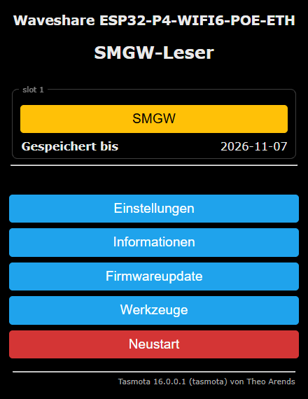
Auf die SD-Karte gehören smgw.html und smgw.html.gz (beide, das Gerät liefert zuerst die .gz aus) und, falls noch nicht vorhanden, die TinyC-IDE tinyc_ide.html.gz. Alle drei ins Hauptverzeichnis der Karte. Nur wenn die Kostenrechnung gewünscht ist (Abschnitt 11), zusätzlich smgw_kosten.html und smgw_kosten.html.gz. Drei Wege:
curl --data-binary @smgw.html http://<Gerät>:83/ufs/sdfs/smgw.html curl --data-binary @smgw.html.gz http://<Gerät>:83/ufs/sdfs/smgw.html.gzPrüfen durch Zurücklesen über Port 82 (
http://<Gerät>:82/ufs/sdfs/smgw.html) und Vergleich der Prüfsumme (md5) mit der Datei am PC.TinyCIde. Das Gerät lädt die aktuelle tinyc_ide.html.gz selbst herunter (braucht Internet über das WLAN). Nach einem Firmware-Update ebenfalls ausführen, die IDE wird beim Flashen nicht mit ausgetauscht.http://<Gerät>/tc öffnen und Open IDE klicken (oder auf der Seite /smgw der Knopf „TinyC-IDE“).slot0-smgw_v022.tc öffnen. In der Geräteleiste Slot 0 wählen und hochladen (die IDE übersetzt das Skript und lädt den Bytecode in den Slot).slot1-smgwweb_v009.tc in Slot 1./tc für beide Slots Autostart einschalten, damit sie nach einem Neustart von selbst laufen.SMG: SMGW-Leser v022 startet …, SMG: Gateway https://… und SMG-Web: v009 bereit …. In der Konsole zeigt TinyC beide Dateien; Slot 1 steht dabei auf Running 0, das ist richtig (er wartet nur auf Seitenaufrufe).Ein neues Skript ersetzt das alte im Slot; die Einstellungen (Takt, Abstand, FTP-Uhrzeit) stehen in /smgw_cfg.txt und bleiben erhalten, ebenso Zugangsdaten und Messwerte.
.secret auf der SD-Karte des Geräts. Sie gehören nicht in die Firmware, nicht in ein Skript, nicht ins Repo, nicht in Briefe, Foren oder Bildschirmfotos.Reiter Einstellungen, goldene Kachel 🔒 Zugangsdaten der HAN-Schnittstelle: Benutzer und Passwort aus den Unterlagen des Messstellenbetreibers eintragen, Zugang speichern.
/smgw_zugang.secret: Zeile 1 Benutzer, Zeile 2 Passwort, Zeile 3 Identifikationsnummer (optional). Wer will, kann die Datei auch am PC anlegen und per Kartenleser kopieren (reiner Text, je höchstens 95 Zeichen, Platzhalter-Beispiel: BENUTZERNAME-HAN / PASSWORT-HAN).Manche Messstellenbetreiber geben statt Benutzer/Passwort ein Zugangszertifikat aus: eine Datei .p12 oder .pfx mit Passwort. In derselben Kachel: Datei auswählen, Passwort der Datei eintragen, Zertifikat laden.
/smgw_cert.secret (Zertifikat, DER als Hex) und /smgw_key.secret (Kurve, Schlüssel, Ablaufdatum). Die Seite zeigt nur „gespeichert · Kurve · gültig bis …“.TinyCTlsCert und zeigt es vor, wenn das Gateway danach fragt. Antwortet das Gateway gleich mit 200 (Cookie + Token), gilt das als angemeldet; fragt es trotzdem nach Digest, werden Benutzer/Passwort aus 6.1 benutzt.TinyCTlsCert 0.*.secret für alle TinyC-Dateiwege übers Netz: nicht herunterladen (Port 82), nicht hochladen/überschreiben (Port 83), nicht über die TinyC-Schnittstelle. Nur die Skripte auf dem Gerät lesen sie..secret-Datei mit.| Schritt | Anfrage an das Gateway |
|---|---|
| 0 | TLS 1.2 (ECDHE-ECDSA, P-256, Port 443); ist ein Zertifikat geladen, wird es vorgezeigt, wenn das Gateway danach fragt |
| 1 | GET /cgi-bin/hanservice.cgi → 401 mit Digest-Nonce (bei Zertifikats-Anmeldung gleich 200) |
| 2 | dasselbe mit Authorization: Digest (MD5) → 200, Cookie session, Token tkn |
| 3 | POST tkn=…&action=meterform → Zählerkennung mid |
| 4 | je Tag POST tkn=…&action=showMeterValues&mid=…&from=TAG&to=TAG (je Antwort ein neues Token) |
| 5 | einmal am Tag (erste erfolgreiche Sitzung): action=swversions (Software-Versionen) und action=tariffform (Auswertungsprofile = freigeschaltete TAF). Nur lesen; scheitert das, zählt der Abruf trotzdem als gelungen. |
| 6 | POST tkn=…&action=logout |
| Datei | Inhalt |
|---|---|
/smgw_JJJJ-MM.txt | je Monat, eine Zeile je Viertelstunde:JJJJ-MM-TT hh:mm<TAB>Bezug 1.8.0<TAB>Einspeisung 2.8.0 (kWh) |
/smgw_tage.txt | je Tag: Datum, Bezug Anfang, Bezug Ende, Einspeisung Anfang, Einspeisung Ende, Anzahl Viertelstunden (Anfang = 00:00 des Tages, Ende = 00:00 des Folgetages) |
/smgw_heute.txt | wie eine Monatsdatei, nur der laufende Tag (nur bei eingeschaltetem Takt) |
/smgw_status.txt | Zustand als JSON (Zugang, gespeichert bis, letzter Abruf, Fehler, nächster Versuch, Takt, Abstand, Gateway-Adresse, Zertifikat 0/1/2, FTP-Stand, Gateway-Firmware) – nie Zugangsdaten |
/smgw_cfg.txt | je eine Zeile (alle optional): takt <min>, versatz <min>, ftpzeit HH:MM, host <IP>, port <n>, pfad </…> |
/smgw_gw_fw.html, /smgw_gw_taf.html | die Gateway-Seiten „Software-Versionen“ und „Auswertungsprofil“ im Rohzustand (einmal am Tag, je höchstens 150 KB). Enthalten Kennungen des Gateways – nicht weitergeben. |
/smgw.html + /smgw.html.gz | die Seite; das Gerät liefert zuerst die .gz aus. Bei einer neuen Fassung beide ersetzen (z. B. gzip -9 -k -n smgw.html) |
| Nur mit der Kostenrechnung (Slot 2, Abschnitt 11): | |
/smgw_kosten.html + .gz | die Seite Stromkosten; bei einer neuen Fassung beide ersetzen |
/smgw_tarif.json | Preise und Einstellungen der Kostenseite (schreibt die Seite beim „Speichern“). Keine Zugangsdaten, aber persönliche Tarifdaten. |
/smgw_boerse_JJJJ-MM.txt | Börsenpreise je Monat, eine Zeile je Viertelstunde: JJJJ-MM-TT hh:mm<TAB>EUR/MWh (Ortszeit); laufendes Jahr, Vorjahr und Vorvorjahr, ältere löscht Slot 2. Für frühere Jahre auch selbst ablegbar (Abschnitt 11.7) |
/smgw_boerse_stand3.txt, /smgw_boerse_dl.json | Stand des Börsenabrufs („bis JJJJ-MM-TT“) und Zwischendatei des letzten Monatsabrufs. Löschen = alles einmal neu holen. |
/smgw_gateway.json | Gültigkeit des TLS-Zertifikats des Gateways (von/bis in UTC), Seriennummer, nur die letzten 4 Stellen der Kennung, Lesedatum – schreibt slot0-smgw ab v021 einmal am Tag (Abschnitt 9.5) |
/smgw_ergaenzung.txt | freiwillig: Zählerstände vor dem ersten Gateway-Wert (Abschnitt 11.6) |
| Zugangsdaten: | |
/smgw_zugang.secret | Zugang HAN (Abschnitt 6.1) |
/smgw_cert.secret, /smgw_key.secret | Client-Zertifikat und Schlüssel (Abschnitt 6.2), nur wenn benutzt |
/smgw_ftp.secret | FTP-Zugang, 4 Zeilen: Server · Benutzer · Passwort · Zielordner (Abschnitt 9.2; wird über die Seite gesetzt) |
/smgw_ftp.pos | Stand der FTP-Sicherung (erster noch offener Monat und Dateigrößen); löschen = beim nächsten Mal alles neu senden |
Laden und Sichern der Dateien geht über die TinyC-Dateiports: lesen http://<Gerät>:82/ufs/sdfs/<Datei>, schreiben per HTTP-POST an http://<Gerät>:83/ufs/sdfs/<Datei>. Die .secret-Dateien sind dort gesperrt.
/smgw: Kopf mit Adresse, Datum, Uhrzeit und Laufzeit, Knöpfe ← Tasmota, TinyC, TinyC-IDE, Hell/Dunkel. Darunter Abrufzustand, letzter Abruf, gespeichert bis, nächster Abruf, Takt. Reiter:
/smgwj Status als JSON, /smgwf?n=tage|heute|JJJJ-MM|gwfw|gwtaf die Dateien (nur diese Namen); /smgwzugang (POST) Zugänge setzen, Antwort nie mit Benutzer, Passwort oder Schlüssel.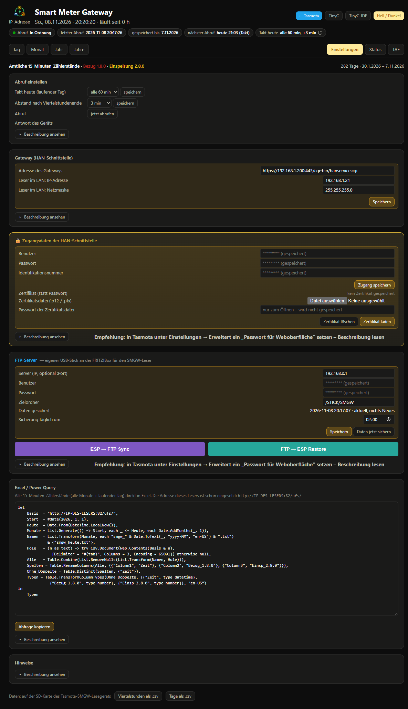
| Feld | Bedeutung |
|---|---|
| Takt heute | aus / 15 / 30 / 60 min / 2 h: holt zusätzlich die Viertelstunden des laufenden Tages nach der Uhr. Jeder Takt ist eine eigene Anmeldung am Gateway. |
| Abstand nach Viertelstundenende | 0–10 min (Konsole 0–14), Vorgabe 2: Zeit für das Gateway, die gerade beendete Viertelstunde abzulegen. |
| jetzt abrufen | holt sofort alle fehlenden Tage (und bei Takt den laufenden). Eine laufende Wartezeit nach einem Fehler bleibt bestehen, der Abruf ist dann vorgemerkt. Unter „Antwort des Geräts“ steht während des Abrufs „Abruf läuft …“, danach das Ergebnis, z. B. „fertig 10:35:35, in Ordnung – neue Viertelstunden bis 10:30“ oder „… keine neuen Werte“ (eine Viertelstunde ist erst nach ihrem Ende abrufbar), bei einem Fehler dessen Text. |
| Feld / Knopf | Bedeutung |
|---|---|
| Server | IP-Adresse des FTP-Servers, optional mit :Port. Bei der FRITZ!Box die IP angeben, nicht fritz.box (über IPv6 verweigert die Box den passiven Modus). |
| Benutzer, Passwort | FTP-Benutzer mit Schreibrecht. Leer lassen = gespeicherter Wert bleibt. Die Seite bekommt beide nie zurück. |
| Zielordner | Ordner aus Sicht dieses Benutzers, z. B. /STICK/SMGW; leer = oberste Ebene. Er muss vorhanden sein – das Skript legt ihn nicht an, sondern meldet einen Fehler. |
| Sicherung täglich um | Vorgabe 02:00 (Tagesabruf 00:20). Jedem Gerät am selben FTP-Server eine eigene Uhrzeit geben (z. B. HEMS 01:00, SMGW-Leser 02:00). |
| Speichern | schreibt /smgw_ftp.secret und die Uhrzeit. Neues Ziel → beim nächsten Lauf geht alles neu hoch. |
| Daten jetzt sichern | smgw_tage.txt und die Monatsdateien, nur geänderte, jeweils ganz; dazu smgw_cfg.txt |
| ESP → FTP Sync | alle Daten noch einmal, die Einstellungen und die Seite (smgw.html + .gz) |
| FTP → ESP Restore | holt Daten und Einstellungen zurück, aber nur Dateien, die auf der SD fehlen oder kürzer sind als auf dem Server (z. B. nach einem Kartentausch). |
Am besten in der FRITZ!Box einen eigenen Benutzer nur mit NAS-Recht anlegen. Auf dem Server liegen danach normale Textdateien. Fehler (Server nicht erreichbar, Anmeldung abgelehnt, Zielordner fehlt) stehen im Kasten, im Reiter Status und auf der Tasmota-Hauptseite; neuer Versuch nach 1 Stunde.
Die Kachel Excel / Power Query (Reiter Einstellungen) enthält eine fertige Abfrage über alle Monatsdateien und den laufenden Tag. Die Adresse setzt die Seite selbst ein – so, wie sie im Browser aufgerufen wurde (IP oder Name). Abfrage kopieren, dann in Excel:
smgw_JJJJ-MM.txt, smgw_heute.txt) über dessen Port 82, nur lesend, im Heimnetz (WLAN). Mit dem Smart-Meter-Gateway spricht nur der Leser selbst, über sein LAN-Kabel an der HAN-Buchse. Deshalb:
Die Abfrage, wie sie die Kachel ausgibt (IP-DES-LESERS setzt die Seite selbst ein; Start = Monat des ersten gespeicherten Tages):
let
Basis = "http://IP-DES-LESERS:82/ufs/",
Start = #date(2026, 1, 1),
Heute = Date.From(DateTime.LocalNow()),
Monate = List.Generate(() => Start, each _ <= Heute, each Date.AddMonths(_, 1)),
Namen = List.Transform(Monate, each "smgw_" & Date.ToText(_, "yyyy-MM", "en-US") & ".txt")
& {"smgw_heute.txt"},
Hole = (n as text) => try Csv.Document(Web.Contents(Basis & n),
[Delimiter = "#(tab)", Columns = 3, Encoding = 65001]) otherwise null,
Alle = Table.Combine(List.RemoveNulls(List.Transform(Namen, Hole))),
Spalten = Table.RenameColumns(Alle, {{"Column1", "Zeit"}, {"Column2", "Bezug_1.8.0"}, {"Column3", "Einsp_2.8.0"}}),
Ohne_Doppelte = Table.Distinct(Spalten, {"Zeit"}),
Typen = Table.TransformColumnTypes(Ohne_Doppelte, {{"Zeit", type datetime},
{"Bezug_1.8.0", type number}, {"Einsp_2.8.0", type number}}, "en-US")
in
Typen
Was sie tut: für jeden Monat vom Start bis heute die Monatsdatei holen (fehlende Monate werden übersprungen), dazu die Datei des laufenden Tages; alles zu einer Tabelle zusammenfügen, doppelte Viertelstunden entfernen, Zeit als Datum/Uhrzeit und die Zählerstände als Zahl (Punkt als Dezimalzeichen in der Datei, deshalb „en-US“). Excel zeigt sie dann im deutschen Format.
Spalten: Zeit, Bezug_1.8.0, Einsp_2.8.0 (kWh, Zählerstände; Verbrauch einer Viertelstunde = Differenz zweier Zeilen). Ändert sich die Adresse des Lesers, die Seite unter der neuen Adresse öffnen und neu kopieren – oder nur die Zeile Basis ändern.
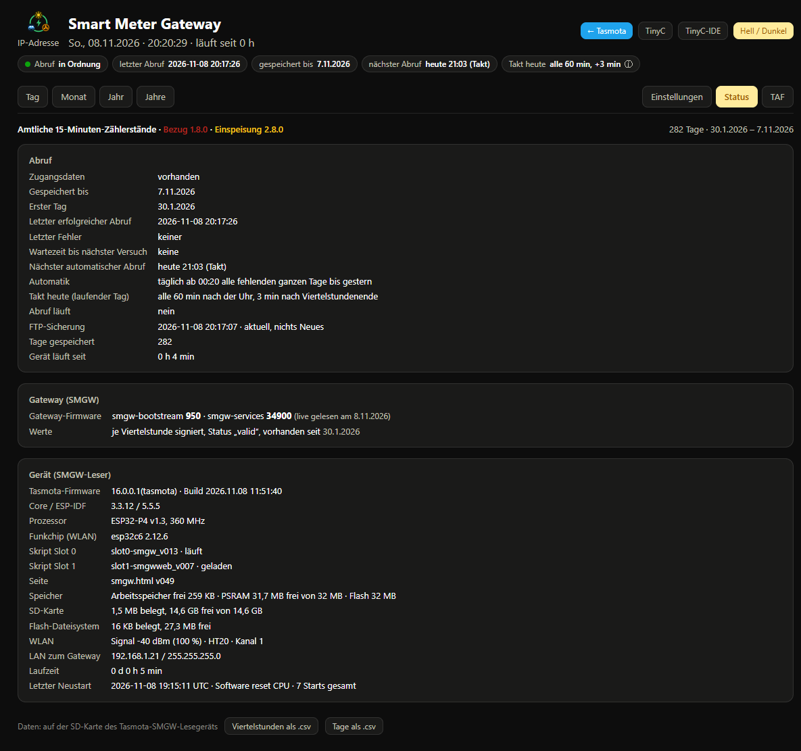
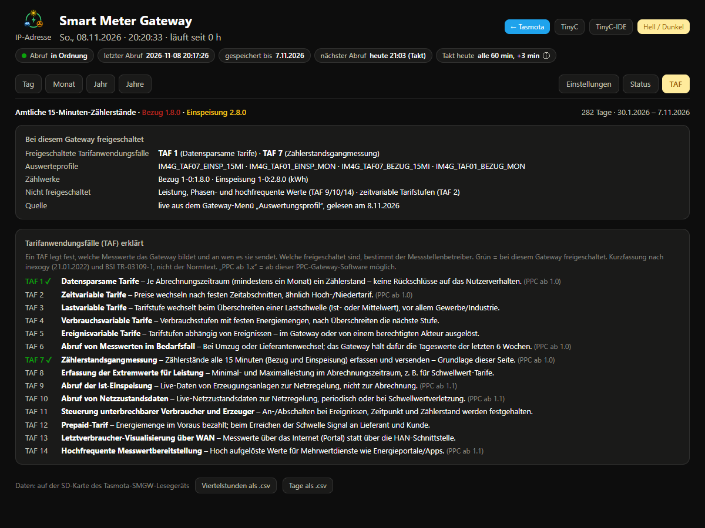
| Befehl | Bedeutung |
|---|---|
SMGW | Zustand (Zugang, gespeichert bis, letzter Abruf, Fehler) |
SMGWAbruf | Abruf jetzt vormerken (eine laufende Wartezeit nach einem Fehler bleibt bestehen) |
SMGWTakt <min> | laufenden Tag alle <min> Minuten nach der Uhr holen (mindestens 15, 0 = aus) |
SMGWVersatz <min> | Abstand nach dem Viertelstundenende (0–14, Vorgabe 2) |
SMGWHost <IP> · SMGWPort <n> · SMGWPfad </…> | Adresse der HAN-Schnittstelle (Vorgabe 192.168.1.200 · 443 · /cgi-bin/hanservice.cgi) |
SMGWFtp · SMGWFtp SYNC · SMGWFtp RESTORE | FTP: Daten jetzt sichern · alles senden · zurückholen. Schreibweise egal (sync = SYNC). |
SMGWFtpZeit HH:MM | Uhrzeit der täglichen Sicherung |
SMGWFrei | Wartezeit nach einem Fehler aufheben (nur bewusst benutzen, Sperre!) |
TinyCTlsCert | Zustand des Client-Zertifikats (loaded, Kurve); setzt Slot 0 selbst |
Zugangsdaten gibt es absichtlich nicht als Konsolenbefehl.
Jedes Gateway schickt beim Verbindungsaufbau sein TLS-Zertifikat mit (Norm X.509). Darin steht, wie lange es gilt – bei PPC sieben Jahre ab der Aktivierung. Bis zu diesem Tag muss das Gateway getauscht oder erneuert sein. Die Anzeigesoftware TRuDI der PTB zeigt dasselbe unter „Details zum Smart Meter Gateway“ → „Zertifikat der TLS-Verbindung“.
TinyCTlsGueltig gibt sie aus (Zeiten in UTC; „ausgestellt für“ nur mit den letzten 4 Stellen, der Rest als *, damit die Kennung nie im Log steht)./smgw_gateway.json. Mit älterer Firmware steht nur eine Logzeile da, sonst läuft alles wie vorher.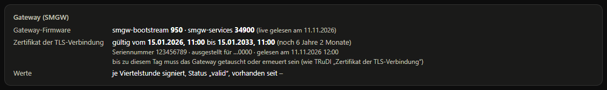
LAN-Kabel, LAN-Adresse (Status 5) und die Gateway-Adresse (Einstellungen) prüfen. Der Leser muss im selben Netz wie die HAN-Buchse sein. Der nächste Versuch kommt automatisch nach der Wartezeit.
Woran es genau lag, zeigt im Log die Zeile SMG: Diagnose <Schritt>: Stufe … (ab Slot 0 v015): Stufe 1 = Verbindungsaufbau gescheitert (tlsConnect), 2 = Senden gescheitert, 3 = keine Antwortzeile, 4 = Antwort unvollständig. Dazu neu (Verbindung neu aufgebaut oder weiterverwendet), stand (Verbindung bestand noch), vorher close (die vorige Antwort hatte „Connection: close“), Status, angekündigte Länge und gelesene Bytes. Die Zeile enthält keine Zugangsdaten.
Typischer Fall: Stufe 3, neu 0, stand 1, vorher close 0 – das Gateway hat eine weiterverwendete Verbindung still geschlossen. Der Leser holt den Tag dann mit neuer Verbindung („Tag … erneut mit neuer Verbindung“), ab v016 auch die Anmeldung („Anmeldung erneut mit neuer Verbindung“; ab v017 nur, wenn seit dem Start schon eine Anmeldung gelungen ist; ab v020 gilt das nach jeder Änderung von Zugangsdaten, Gateway-Adresse oder Zertifikat wieder neu). Beim Erstabruf am 09.11. kam das bei 283 Tagen viermal vor, alle Tage wurden geholt.
Fehler in slot1-smgwweb bis v008 bei noch leerem Zugang. slot1-smgwweb v009 laden. Umweg mit v008: erst Benutzer und Passwort speichern, Seite neu laden, dann die Identifikationsnummer.
Benutzername oder Passwort stimmen nicht. Auf der Seite neu eintragen; neue Daten heben die 12-h-Wartezeit auf. Nicht mehrfach hintereinander probieren, sonst sperrt das Gateway.
Die Firmware enthält setRSAOnly(false) nicht (Abschnitt 4.1). Das Gateway bietet nur ECDSA an.
Die Firmware ist älter als 08.11.2026 oder ohne USE_MQTT_CLIENT_CERT gebaut (Abschnitt 4.3). Der Abruf läuft dann mit Benutzer/Passwort weiter. Ab Firmware 09.11.2026 antwortet TinyCTlsCert in diesem Fall selbst mit "error":"needs USE_MQTT_CLIENT_CERT".
Die Seite lädt die Diagramm-Bibliothek Chart.js von cdnjs und prüft sie per Prüfsumme; der Browser braucht dafür Internet. Ohne Internet oder bei falscher Prüfsumme fehlen nur die Diagramme, alle Werte stehen weiter in den Tabellen.
Nur P4: Der C6 hat noch die Werksfirmware. HostedOta ausführen (Abschnitt 4.4).
Der Ordner existiert für diesen Benutzer nicht. Bei einem Benutzer, dessen Freigabe nur auf einen Ordner zeigt, ist dieser Ordner schon „/“ – Zielordner dann leer lassen.
Die Adresse in der Zeile Basis stimmt nicht mehr (neue IP des Lesers – die Adresse des Gateways spielt für Excel keine Rolle). Seite unter der aktuellen Adresse öffnen und die Abfrage neu kopieren.
Das Gateway hat sie selbst nicht. Am Tag der Zeitumstellung im Herbst werden die doppelten Viertelstunden überschrieben; die Tagessumme stimmt, nur das Diagramm zeigt 96 statt 100 Werte.
/smgw, CSV, Excel und FTP-Sicherung laufen genauso. Slot 0 und Slot 1 werden für die Kostenrechnung nicht geändert.Mit Slot 2 rechnet die Seite /smgwkosten aus den amtlichen 15-Minuten-Zählerständen des Lesers, was Strombezug und Einspeisung gekostet bzw. gebracht haben – je Viertelstunde, Tag, Monat und Abrechnungsjahr, mit den eigenen Preisen. Sie vergleicht den eigenen Tarif außerdem mit Angeboten anderer Anbieter, immer auf dem tatsächlich gemessenen Verbrauch.
smgw_kosten.html und smgw_kosten.html.gz auf die SD-Karte laden, genauso wie smgw.html (Abschnitt 5.1).slot2-smgwkosten_v006.tc öffnen, Slot 2 wählen, hochladen, in /tc Autostart einschalten (wie Abschnitt 5.2).SMG-Kosten: v006 bereit, Boerse bis …./smgw neu laden: In der Reiterzeile steht jetzt mittig die Seitenwahl „SMGW-Leser | Stromkosten“. SMGW-Leser ist immer grün, Stromkosten immer orange; die offene Seite ist kräftig, die andere blass. Auch der gewählte Reiter hat die Farbe seiner Seite. Ohne Slot 2 bleibt sie verborgen.Slot 2 braucht Internet über das WLAN (für die Börsenpreise). Beim ersten Start holt er die Börsenpreise ab dem 01.01. des ersten Messjahres nach, einen Monat alle 20 Sekunden – ein ganzes Jahr dauert etwa 4 Minuten. Solange Slot 0 am Gateway abruft, wartet Slot 2.
Wieder weglassen: In /tc Slot 2 stoppen und Autostart ausschalten. Die Seitenwahl verschwindet beim nächsten Laden von /smgw. Die Dateien aus Abschnitt 8 können liegen bleiben oder gelöscht werden; die Messwerte berührt das nicht.
webOn). Das geht in einem Slot ungleich 0 erst mit Firmware nach dem 03.11.2026.http://<Gerät>/smgwb?n=status zeigt, bis wann Börsenpreise da sind, den letzten erfolgreichen Abruf und einen eventuellen Fehler.Die Börsenpreise braucht nur, wer einen dynamischen Tarif hat oder vergleichen will. Für Festpreis und zeitvariable Tarife rechnet die Seite ohne sie.
Netzentgelte, Abgaben und meist auch der Lieferantenpreis wechseln zum 01.01. Darum gibt es für jedes Jahr ein Tarifblatt mit allem, was in diesem Jahr gilt. Oben stehen Knöpfe je Jahr (höchstens sieben: vom ersten Jahr mit Werten bis zum Folgejahr), beschriftet mit „abgerechnet“, „Vorjahr“, „laufendes Jahr“ oder „Folgejahr · vorläufig“.
/smgw_tarif.json über Port 83, liest die Datei über Port 82 zurück und vergleicht sie. Ungespeicherte Änderungen zeigt „● nicht gespeichert“; beim Verlassen der Seite warnt der Browser.Ein Tarifblatt hat drei Teile:
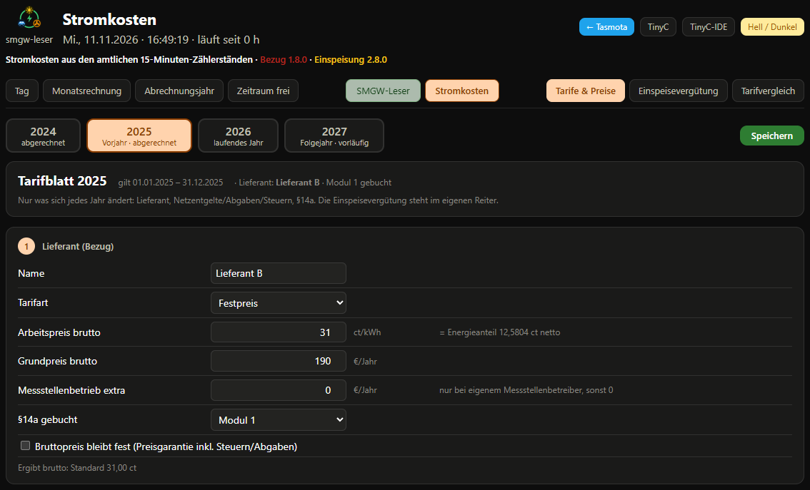
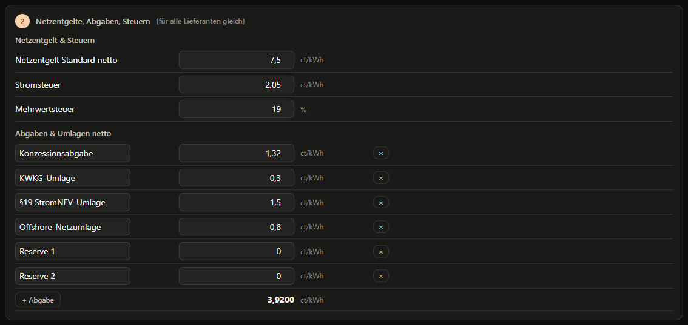
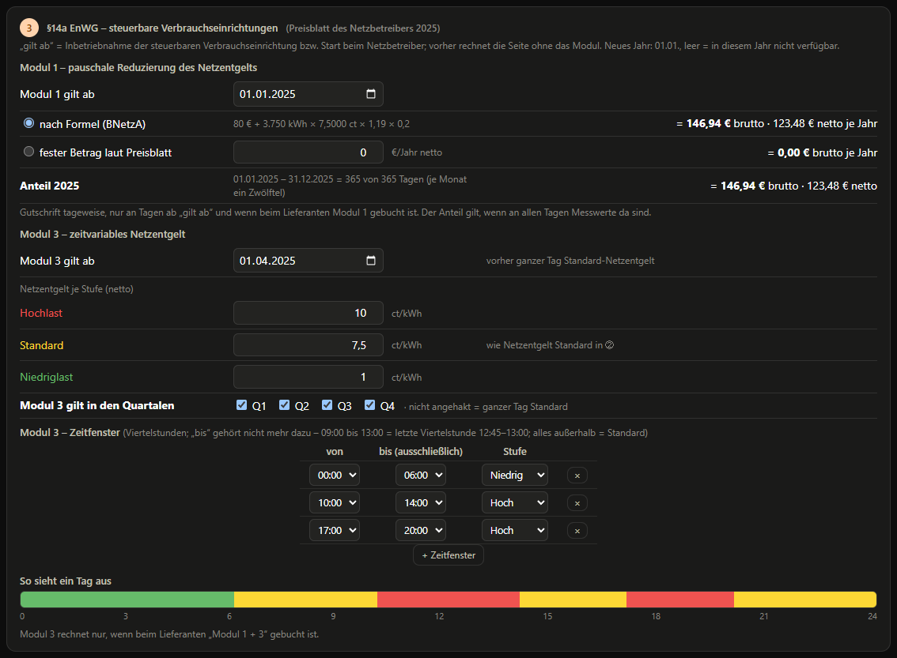
Einspeisevergütung hat einen eigenen Reiter oben: Vergütung, Art, Inbetriebnahme, Ende der Förderung. Sie kommt vom Verteilnetzbetreiber und bleibt meist 20 Jahre gleich; ändert sich die Anlage, dort einen neuen Abschnitt anlegen.
Ältere Daten: Gespeicherte Zeitfenster der Form „05:59“ (alte Fassungen) werden beim Laden einmal zu „06:00“; die Rechnung ändert sich dadurch nicht.
§14a EnWG – berechneter Vorteil (Abrechnungsjahr): Modul 1 = die Pauschale anteilig ab „Modul 1 gilt ab“; Modul 3 = Kosten mit Modul 1 minus Kosten mit Modul 1 + 3, mit den eigenen Viertelstunden und den Stufen, Zeitfenstern und Quartalen aus dem Tarifblatt, ab „Modul 3 gilt ab“. Gerechnet wird der Anspruch nach den Preisblättern – unabhängig davon, was beim Lieferanten gebucht oder tatsächlich gutgeschrieben wurde. Ist ein Modul nicht verfügbar, steht das dort. Die Kachel kommt mit ins PDF; so gibt es je Jahr einen Ausdruck zum Nachweis.
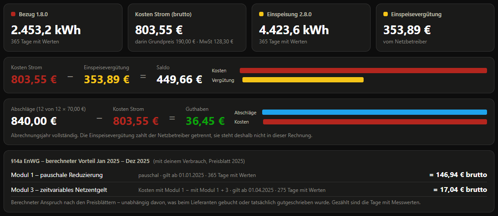
Als PDF drucken (Monatsrechnung, Abrechnungsjahr, Tarifvergleich): öffnet den Druckdialog, dort „Als PDF speichern“. Immer eine A4-Seite, hell, mit eigener Kopfzeile (Ansicht, Zeitraum, Druckdatum, Herkunft der Daten – ohne Adresse des Lesers), ohne Knöpfe.
Laden: Die Seite holt zuerst das laufende Jahr und ist dann bedienbar; ältere Monate und Börsenpreise kommen im Hintergrund nach („Bedienbar – lade im Hintergrund …“), danach rechnet sie neu. Abgeschlossene Monate merkt sich der Browser (IndexedDB) und prüft sie höchstens einmal am Tag nach – ab dem zweiten Aufruf ist die Seite nach wenigen Sekunden komplett. Die Daten bleiben auf der SD-Karte; der Browser hat nur eine Kopie.
Der Tarifvergleich rechnet einen Verbrauch mit mehreren Tarifen durch. Oben:
Die Zeilen stehen in fester Reihenfolge: Vorjahr (wenn angehakt, blass) → aktuelles Jahr → Vorausplanung (sobald es ein Tarifblatt für das Folgejahr gibt) → die angehakten Angebote (Festpreis 1/2, Zeitvariabel 1/2, Dynamisch 1/2). Alle Zeilen rechnen mit demselben Verbrauch, jede mit den Preisen ihres Jahres. Wer z. B. „Verbrauch 2025“ wählt, sieht in der Zeile 2025 die echten Kosten 2025, in der Zeile 2026 denselben Verbrauch mit den Preisen 2026 und in der Vorausplanung mit den Preisen des Folgejahres.
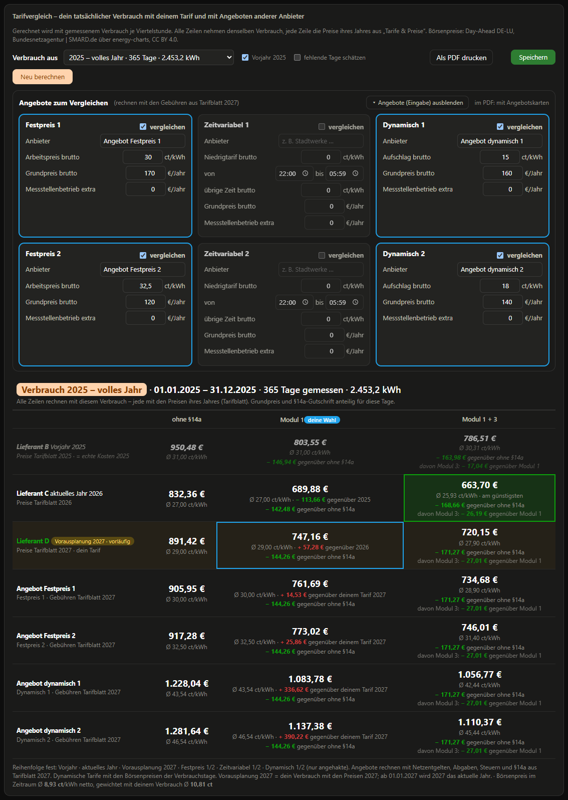
Wurde das Gateway mitten im Jahr eingebaut, fehlen am Jahresanfang Tage. Wer dafür eigene Zählerstände hat (z. B. von einem optischen Lesekopf oder abgelesen), kann sie als /smgw_ergaenzung.txt auf die SD-Karte legen:
JJJJ-MM-TT hh:mm<TAB>Bezug kWh<TAB>Einspeisung kWh
Die Seite liest die Zählerstände monatsweise von der SD-Karte. Für jeden Monat, für den eine Datei da ist, rechnet sie – egal, ob die Werte vom Gateway stammen oder selbst abgelegt sind. Wer für die Zeit vor dem Gateway eigene 15-Minuten-Werte hat, kann damit das Vorjahr (und später weitere Jahre) vollständig machen.
Woher die Werte kommen können: von einem optischen Lesekopf am selben Hauptzähler des Netzbetreibers (z. B. Tasmota mit SML-Skript, Logdatei oder Excel-Tabelle). Der Lesekopf liest dieselben Zählerstände wie das Gateway; die Werte sind deshalb genauso ablese-relevant. Werte von einem eigenen Zwischenzähler hinter dem Hauptzähler sind nicht dasselbe – die gehören nicht hierher.
Datei je Monat: /smgw_JJJJ-MM.txt (z. B. /smgw_2025-01.txt), eine Zeile je Viertelstunde:
JJJJ-MM-TT hh:mm<TAB>Bezug kWh<TAB>Einspeisung kWh 2025-01-01 00:00 1234.5600 5678.9000 2025-01-01 00:15 1234.8100 5678.9000
/smgw_JJJJ-MM.txt gibt. Der Monat, in dem das Gateway begann (z. B. März, Gateway ab 15.03.), gehört dem Gateway – die Tage davor kommen in die Ergänzung (Abschnitt 11.6). Vor dem Hochladen über http://<Gerät>:82/ufs/sdfs/smgw_JJJJ-MM.txt nachsehen, ob die Datei schon da ist.Hochladen (wie die Seite, Abschnitt 5.1) – je Datei:
curl --data-binary @smgw_2025-01.txt http://<Gerät>:83/ufs/sdfs/smgw_2025-01.txt curl http://<Gerät>:82/ufs/sdfs/smgw_2025-01.txt | head -3
Oder die SD-Karte im Kartenleser beschreiben (Slots vorher stoppen). Danach die Seite Stromkosten neu laden (F5); sie liest das laufende Jahr und das Vorjahr.
Börsenpreise für so ein Jahr braucht nur, wer in diesem Jahr einen dynamischen Tarif hatte. Slot 2 holt sie ab dem ersten Messjahr des Gateways; für ein früheres Jahr die Dateien /smgw_boerse_JJJJ-MM.txt im Format von Abschnitt 11.2 selbst ablegen, z. B. aus https://api.energy-charts.info/price?bzn=DE-LU&start=2025-01-01T00:00%2B01:00&end=2026-01-01T00:00%2B01:00 (Zeitstempel in Unix-Sekunden UTC → Ortszeit umrechnen). Bis 30.09.2025 gibt es nur Stundenpreise: den Wert dann für alle vier Viertelstunden der Stunde eintragen.
Aufbewahrung: Die Zählerdateien löscht kein Slot – sie bleiben auf der SD-Karte, auch nach einem Tausch des Gateways. Börsendateien behält Slot 2 sieben Kalenderjahre. Die Seite lädt die Zählerstände ab dem ersten Tarifblatt (höchstens sieben Jahre).
Gerechnet wird je Viertelstunde und erst die Summe gerundet.
Beim Vergleich mit einer eigenen Tabelle oder der Lieferantenrechnung zuerst diese Punkte prüfen: